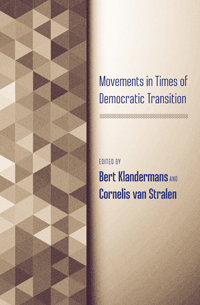

<body bgcolor="#FFFFFF" text="#000000" link="#0000FF" vlink="#CC0000" alink="#CC0000"><center><hr width="350" size="1" align="center" noshade>How do social movements that trigger democratic movements survive their own success?<hr width="350" size="1" align="center" noshade><p><a href="https://cdcshoppingcart.uchicago.edu/Cart/ChicagoBook.aspx?ISBN=9781439911808&&PRESS=temple" target="_top">Buy this book!</a> | <a href="https://cdcshoppingcart.uchicago.edu/Cart/Cart.aspx?PRESS=temple" target="_top">View Cart</a> | <a href="https://cdcshoppingcart.uchicago.edu/Cart/Cart.aspx?PRESS=temple" target="_top">Check Out</a></p><p></p></center><!--none//--><h1>Movements in Times of Democratic Transition</h1>
<h3>edited by Bert Klandermans and Cornelis van Stralen</h3>
<P>cloth 1-4399-1180-0 $94.50, Jan 15, <FONT COLOR=#990033>Available</FONT>
<br>paper 1-4399-1181-9 $34.95, Jan 15, <FONT COLOR=#990033>Available</FONT>
<br>Electronic Book 1-4399-1182-7 $34.95 <FONT COLOR=#990033>Available</FONT>
<BR> 382 pp
6x9
35&nbsp;tables 16&nbsp;figures
</P><h3 align="center"><P><font color="#996633">Outstanding Academic Title, <i>Choice</i>,
2015</font></P>
</H3>
<BLOCKQUOTE><I>"The editors have assembled an impressive set of internationally known scholars of social movements to address the central problems of transitions from authoritarian regimes. The geographical scope of the collection is extraordinary, and the book’s unusually high level of coherence lends important value to the individual papers. </I>Movements in Times of Democratic Transition<I> is a timely book, and its many analyses provide a broad and deep set of theoretical tools for assessing transitions. I do not know of another such comprehensive treatment of the potential trajectories of social movement actors than these collected essays."</i><br>&#151<b>John D. McCarthy</b>, Distinguished Professor of Sociology at the Pennsylvania State University</I></BLOCKQUOTE>
<P>In regions that have undergone tumultuous transitions, democratic social movements have often been the catalyst for great change. However, once those changes occur, can these movements survive, and if so, how?
<P>The editors and contributors to <I>Movements in Times of Democratic Transition</I> examine in comparative detail how social movements act within the context of the democratic transitions they have been fighting for, and how they are affected by the changes they helped bring about. Offering insights into the nature of how social movements decline, radicalize, revitalize, or spark new cycles of activism, <I>Movements in Times of Democratic Transition</I> provides a comprehensive analysis of these key questions of mobilization research.
<P><I>Contributors include: Paul Almeida, Christopher J. Colvin, Alison Dahl Crossley, Donatella della Porta, Grzegorz Ekiert, Stephen Ellis, Olivier Fillieule, Grzegorz Forys, Krzysztof Gorlach, Ineke van Kessel, Camila Penna, Sebastián Pereyra, Steven Robins, Federico M. Rossi, Ton Salman, Máté Szabó, Verta Taylor, Michal Wenzel, and the editors.</I>
<BR>&nbsp;<h2>Excerpt</h2><P>Excerpt available at <a href="http://www.temple.edu/tempress">www.temple.edu/tempress</a></p>
<BR>&nbsp;<h2>Reviews</h2>
<p><i>"This fascinating collection of articles on social movements in times of democratic transition makes a significant contribution to the field.... The authors raise crucial issues social movement organizations experience in Brazil, Argentina, El Salvador, South Africa, and Poland. In each instance, the authors demonstrate that the particular history of a successful social movement shapes and conditions its interaction with the new government. This volume has much to teach social movement researchers and does a superb job of framing the issues. Summing Up: Essential."</i><br>&#151<b><i>Choice</i></b>
<p><i>"[A] valuable collection of research articles by noted experts who provide evidence for movement radicalization, revitalization, abeyance, and disengagement. The book is rich in theory and in methods—various chapters report on both qualitative and quantitative methods—as well as thick descriptions of particular cases. Well organized and well edited.... this volume offers invaluable insights."</i> <br>&#151<b><i>Contemporary Sociology</i></b>
<BR>&nbsp;<h2>Contents</h2><P>
<p>Introduction &bull; <i>Bert Klandermans and Cornelis van Stralen</i>
<p><b>Part I: Theory</b>
<br>1. Mobilizing for Democracy: Social Movements in Democratization Processes &bull; <i>Federico M. Rossi and Donatella della Porta</i>
<br>2. Disengagement from Radical Organizations: A Process and Multilevel Model of Analysis &bull; <i>Olivier Fillieule</i>
<br>3. Abeyance Cycles in Social Movements &bull; <i>Alison Dahl Crossley and Verta Taylor</i>
<p><b>Part II: Latin America</b>
<br>4. Introduction &bull; <i>Cornelis van Stralen</i>
<br>5. A Democracy for “Us”—or for All? The Ambivalences of Bolivia’s Social Movements since Their Triumph &bull; <i>Ton Salman</i>
<br>6. Social Movement Activity in the Transition to Partido dos Trabalhadores Government: The Case of the MST in Brazil &bull; <i>Camila Penna</i>
<br>7. Democratization and the Revitalization of Popular Movements in Central America &bull; <i>Paul Almeida</i>
<br>8. Strategies and Mobilization Cycles of the Human Rights Movement in the Democratic Transition in Argentina &bull; <i>Sebastián Pereyra</i>
<p><b>Part III: South Africa</b>
<br>9. Introduction &bull; <i>Stephen Ellis</i>
<br>10. The United Democratic Front and Its Legacy after South Africa’s Transition to Democracy &bull; <i>Ineke van Kessel</i>
<br>11. Movement Politics and Party Politics in Times of Democratic Transition: South Africa, 1994–2000 &bull; <i>Bert Klandermans</i>
<br>12. Social Movements after Apartheid: Rethinking Strategies and TACtics in a Time of Democratic Transition &bull; <i>Steven Robins and Christopher J. Colvin</i>
<p><b>Part IV: East-Central Europe</b>
<br>13. Introduction &bull; <i>Grzegorz Ekiert</i>
<br>14. From Anticommunist Dissident Movement to Governing Party: The Transformations of Fidesz in Hungary &bull; <i>Máté Szabó</i>
<br>15. Defending Interests: Polish Farmers’ Protests under Postcommunism &bull; <i>Grzegorz Forys and Krzysztof Gorlach</i>
<br>16. From Total Movement to Interest Group: Labor and Democratization in Poland &bull; <i>Michal Wenzel</i>
<p>Contributors
<br>Index
</P><BR>&nbsp;<H2>About the Author(s)</H2>
<P><b>Bert Klandermans</b> is Professor in Applied Social Psychology at the University of Amsterdam. He is the co-editor (with Jacquelien van Stekelenburg and Conny Roggeband) of <i>The Future of Social Movement Research: Dynamics, Mechanisms, and Processes</i>, and co-author (with Nonna Mayer) of <i>Extreme Right Activists in Europe</i>.</P>
<P><b>Cornelis van Stralen</b> is retired Associate Professor of Social Psychology and Collective Health in the Department of Psychology at the Federal University of Minas Gerais (Brazil) and co-author of <i>Psicologia Social: Ética, participação política e inclusão social (Social Psychology: Ethics, Political Participation and Social Inclusion)</i>.</P>
<BR><H2>Subject Categories</H2>
<p><A HREF="/tempress/sociology.html" TARGET="_top">Sociology</a>
<BR><A HREF="/tempress/social.html" TARGET="_top">Community Organizing and Social Movements</a>
<BR><A HREF="/tempress/political.html" TARGET="_top">Political Science and Public Policy</a>
</p>
<p align="center"><a href="https://cdcshoppingcart.uchicago.edu/Cart/ChicagoBook.aspx?ISBN=9781439911808&&PRESS=temple" target="_top">Buy this book!</a> | <a href="https://cdcshoppingcart.uchicago.edu/Cart/Cart.aspx?PRESS=temple" target="_top">View Cart</a> | <a href="https://cdcshoppingcart.uchicago.edu/Cart/Cart.aspx?PRESS=temple" target="_top">Check Out</a></p><p><font face="Arial" size="1"><a href="copyright.html" onMouseOver="window.status='Web Copyright Policy';return true;" onMouseOut="window.status=''" title="Web Copyright Policy">&copy;</a> 2016 <a href="http://www.temple.edu" target="new" onMouseOver="window.status='Link to Temple University home page';return true;" onMouseOut="window.status=''" title="Link to Temple University home page">Temple University</a>. All Rights Reserved. http://www.temple.edu/tempress/titles/2339_reg.html</font></p>